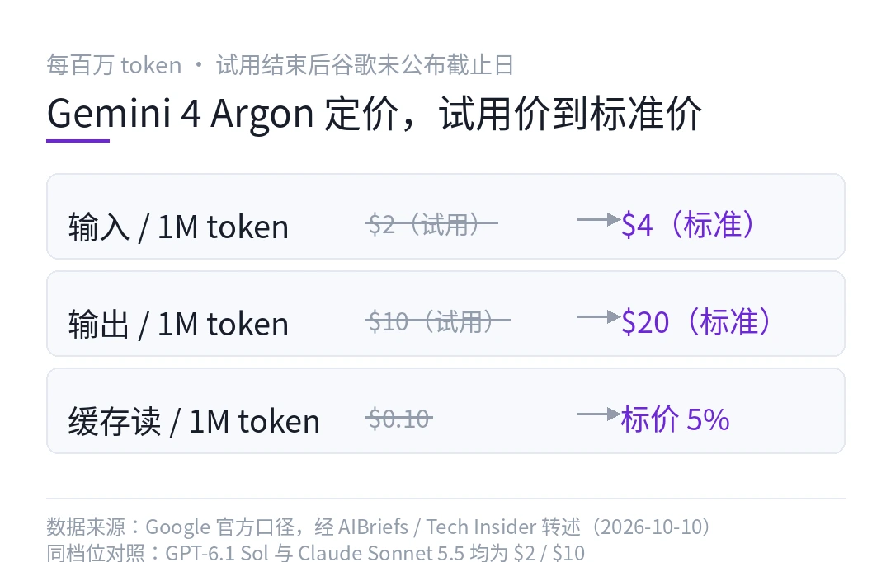
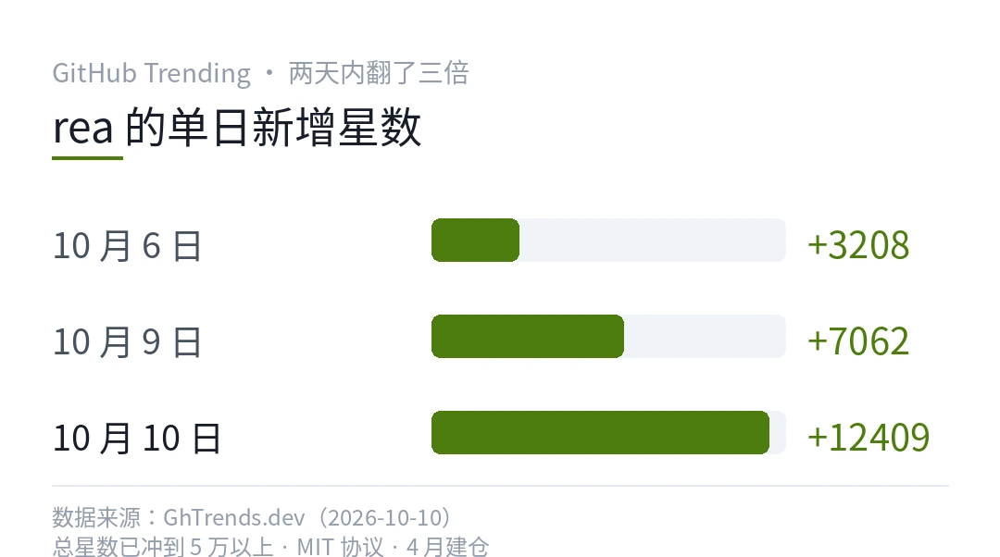
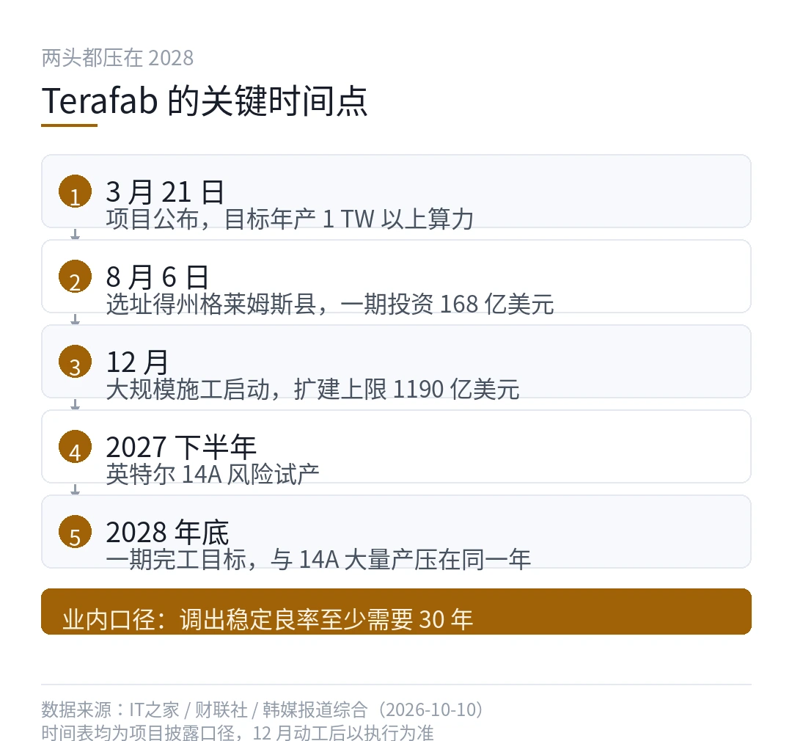
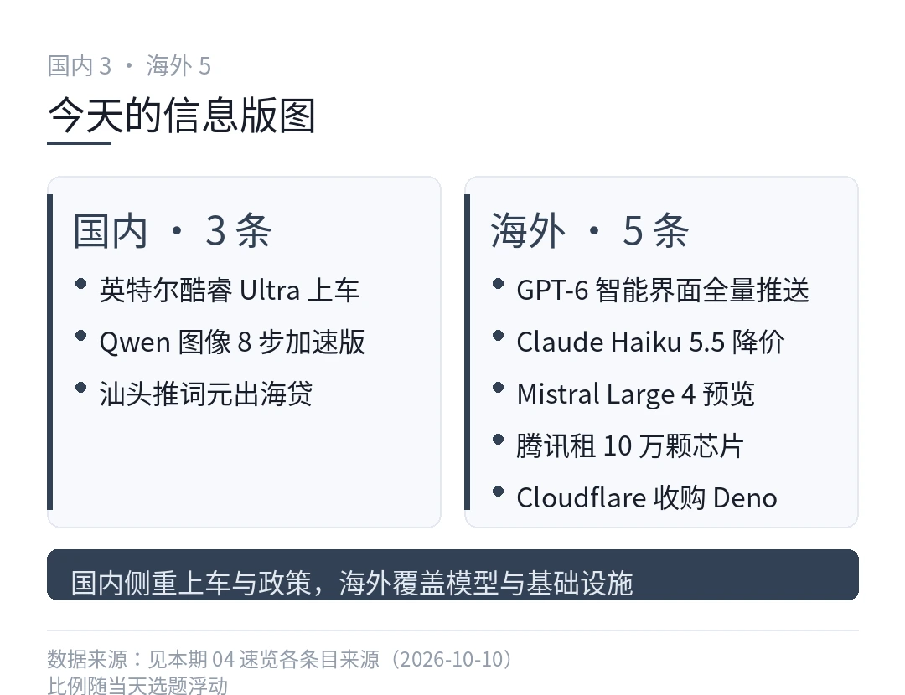

01谷歌新旗舰定价 2 美元，首发名额先给了网络安全圈
- Gemini 4 Argon 试用价 2 美元输入、10 美元输出，缓存读 0.1 美元
- 单次输出上限 100 万 token，量产模型里目前没有第二家
- 首批用户是 Fairwind 计划里的安全研究员，不是普通开发者
- 试用结束后输入 4 美元、输出 20 美元，谷歌没给截止日
9 月 30 日官宣，10 月 10 日还挂在预览档，公众 API 目录里查不到它的路由。
谷歌这回有点反常。Gemini 3 Pro 之后，它快十个月没碰过旗舰档位。这次 Gemini 4 Argon 回来，第一批能调到它的人，不是付钱的开发者，是 Fairwind 计划里那批安全研究员和开源基础设施维护者。
为什么是这个顺序？往下看。
先把价格摆出来。试用期内，每百万 token 输入 2 美元，输出 10 美元，缓存输入打到 0.1 美元，等于标价的 5%。试用一过，输入 4 美元、输出 20 美元。谷歌没说试用期哪天结束，也没公布过渡安排。

这个价位不是随便定的。GPT-6.1 Sol 上月底发布，也是 2 美元和 10 美元，缓存 0.1 美元。两大厂在同一个价位上碰了面。跟旗舰 Astra 的 10 美元和 50 美元一比，这个档位就是今年秋天的主战场。
把同档位的几个主要玩家摆一起看：
| 模型 | 输入 / 1M | 输出 / 1M | 缓存读 / 1M || --- | --- | --- | --- || Gemini 4 Argon（试用价） | $2 | $10 | $0.10 || GPT-6.1 Sol | $2 | $10 | $0.10 || Claude Sonnet 5.5 | $2 | $10 | $0.10 || Gemini 4 Argon（标准价） | $4 | $20 | 未公布 || GPT-6 Astra（旗舰） | $10 | $50 | $1.00 |
三大家在同一个点上扎堆，竞争把旗舰档的标价钉死在了这里。对调用方来说，谈判空间从来没这么大过。
说真的，更值得盯的是那条输出上限。100 万 token 的单次输出，你现在找不到第二家量产模型敢标这个数。你想想看，一次调用吐出一整个代码库迁移，或者一份几百页的合规报告，这类活以前得拆成几十轮对话喂，中间每次断点都要重新对齐上下文。
注意一点，输出是按 token 计费的，思考过程也算输出 token。真跑满 100 万，一次调用就是 10 美元，标准价下 20 美元。接进自动化循环里不做上限控制，账单会很直观。接它的正确姿势是显式设 max\_output\_tokens 和推理预算，别裸跑。
性能这边，第三方口径大致齐了。文本竞技场 1525 分排在第一，Vals 指数 68.9%，长链路软件工程基准 DeepSWE v1.1 拿了 77.9%，Artificial Analysis 智能指数 53，跟 GPT-6 Astra 打平。网络安全专项基准上与 GPT-6 Astra、Grok 4.7 并列，Vals 指数上排在这两者前面。
幻觉率 15%，Artificial Analysis 的口径。这个数不算低。长输出加中等幻觉率，两个数字放一起，你就知道为什么谷歌不敢直接全量放开。
讲道理，发布路径比定价更有信息量。
谷歌把间接提示注入的对抗训练写进了 Argon 的卖点，在 Gray Swan 的注入基准上刷出自家最好成绩。逻辑是这样的，模型能自主挖漏洞，这类能力放出去之前，得先有人把补丁工具备齐。
所以 Fairwind 先行。安全团队先拿它审计关键基础设施，顺便给护栏喂真实遥测数据。第二阶段才轮到付费 API 和 Vertex AI 企业客户，最后是 Ultra 订阅用户和全量开放。三步走，每一步都踩在安全评估的节点上。
两家的打法对照着看挺有意思。OpenAI 拿 GPT-6.1 Sol 全量上线，API 当天就能调。谷歌把旗舰锁进保险箱，钥匙先交给防守方。同一个价位，两条路线，一个赌速度，一个赌安全叙事。
其实吧，能力越强的模型，发布时的仪式感反而越重，这个行当对风险的定价在变。
缓存是这个价位里最容易被忽略的一笔账。对着固定代码库或文档库反复提问的场景，输入大都是重复的，95% 折扣的缓存读 0.1 美元，等于把这类任务的实际成本压到了标价的零头。谁的任务越像「反复读同一堆材料」，谁在这个价位上占的便宜越大。
落到用的人身上，现在能做什么？生产管线先别押它，公开路由上线之前，任何迁移都是空谈。等开放之后，先拿缓存重的大场景试，比如对着固定代码库反复提问的审计类任务，缓存读 0.1 美元的价格优势在这种场景里才吃得满。
反过来说，如果你的活是高频短输出，路由、分类这类轻判断，Argon 不是给你的，专用决策模型那个方向今天另有热闹，下期细说。
反正，先把管线准备好等开放就行。==开放之前，标价再低也只是个数字。==
模型能力可以慢慢等。价格战今天已经打完了，发布方式的分化才刚开始。
---
本文信息来源
- AIBriefs — AI News Today（2026-10-10） · aibriefs.news
- Tech Insider — GPT-6.1 Sol vs Gemini 4 Argon: 1M-Token Gap（2026-10-10） · tech-insider.org
- GadgetsFocus — Gemini 4 Argon Explained: 1M Output Tokens, Benchmarks, Pricing（2026-10-10） · gadgetsfocus.com
- AI Agent Store — Gemini 4 Argon 模型页（2026-10-10） · aiagentstore.ai
- AI Pricing Guru — Google AI Pricing, October 2026（2026-10-10） · aipricing.guru
02一周涨了 5 万星，这个工具让 agent 拆开闭源软件看个明白
- morluto/rea，MIT 协议，10 月 10 日单日涨 12409 星
- 原生二进制、Electron、.NET、JavaScript、安卓应用都能拆
- 每条结论带证据和局限说明，这是它跟同类最大的区别
GitHub 这周的头号项目，不是又一个 agent 框架，是个让 agent 学会「自己去看」的工具。
10 月 10 日单日 +12409 星，连续四天挂在趋势榜，总星数冲到 5 万以上。
它叫 rea，作者 morluto，4 月建仓，MIT 协议。一句话讲清它做的事，把你没有源码的软件交给 coding agent，它反编译、跑起来、还原出一段能读的实现逻辑，每个结论后面跟着证据。
它能拆什么？
原生二进制走 Ghidra、Hopper 或 IDA，Electron 应用、JavaScript、.NET 程序集、安卓包各有各的通道。官方支持 macOS 12+ 和主流 Linux，Windows 下的原生分析还标着实验性，别指望开箱即用。
开源中国举了两个例子。
一个是把一个老游戏的音频声像算法整个还原出来，agent 拿着反编译结果把声像计算的分支重写了一遍，行为对得上原版。
另一个是 Windows 计算器那个经典谜题，200 + 10% 为什么等于 220？rea 启动 calc.exe，反编译出 % 按钮的处理分支，挖出了隐藏规则。加号后面，10% 按第一个数的百分比算，200 加 20 等于 220。乘号后面，10% 直接当 0.1 去乘。agent 把这套分支逻辑还原出来，还顺手写了个两种情况都处理正确的小计算器。
为什么偏偏是现在火？
你想想看，agent 干活最大的障碍之一，是它对闭源世界是瞎的。依赖装了个闭源 SDK，行为不对，它只能靠猜。想参考某个桌面软件的设计，没源码，只能看截图猜实现。安全团队想确认一个二进制里有没有可疑行为，传统逆向工具的门槛又高。
rea 把「自己去看」变成 agent 的一项本地能力，靠的是反汇编和运行证据，不是训练数据里的记忆。说真的，这类需求一直在，只是没有顺手的通道，现在有人把管线铺好了。
怎么跑起来？
装法走 npm，示意流程如下（不是真实 API，装前以仓库 README 为准）。
```bash
# 示意流程，非真实 APInpm install -g rea-agents
# 在你的 coding agent 里挂上 rearea connect --agent claude-code
# 把目标应用指给它rea inspect /Applications/SomeApp.app```
跑起来的关键在于它不替你下结论。工具把反编译结果和运行时证据交给 agent，由 agent 组织成人话，每条结论都标着出处和局限。官网 FAQ 把可解释性写成了产品特性，而不是事后补丁。在一个 agent 越来越敢拍脑袋给答案的年代，盲猜的逆向结论比没有结论更危险。
坑在哪？
注意一点，隐私边界要先想清楚。分析在本地跑，但反编译结果会交给你的 agent，后半段归模型厂商的数据政策管。拆公司采购的闭源软件之前，许可协议里关于逆向工程的条款得先翻一遍，麻烦在于这条红线各国宽严不一，没人能替你拍板。
另一个坑是预期管理。GhidraMCP 只包了 Ghidra 一家，2025 年 6 月之后没发过版本，rea 的覆盖面宽得多。但拆原生二进制的质量仍取决于底下挂的反编译器，IDA 的授权费用不便宜，Ghidra 免费但上手门槛高。其实吧，工具不改变逆向本身的难度，它只是把门槛从「得会逆向」降到了「得会提问」。

本文信息来源
- 开源中国 — 5 万 star 的 REA，把逆向工程变成 agent 的一项本地能力（2026-10-10） · oschina.net
- GhTrends.dev — GitHub Trending Daily（2026-10-10） · ghtrends.dev
- GenAI Secret Sauce — Weekly Digest, October 3 to 9, 2026（2026-10-09） · genaisecretsauce.com
- Capital & Compute — What Is REA? Reverse Engineer Apps With AI Agents（2026-10-10） · capitalandcompute.net
- GitHub — morluto/rea 仓库主页 · github.com
03马斯克要造 1 太瓦算力的芯片厂，老手们先提了良率这关
10 月 10 日，韩国媒体的采访把 Terafab 又推到了台前。多位业内受访者的口径很一致，建厂容易，良率难。
难到什么程度？一位三星高管的说法是，把设备调到满足量产良率、并长期保持工艺步骤的最佳组合，至少需要 30 年。另一位在这行干了很多年的业内人也认同，把星舰送上火星，可能都比让 Terafab 稳定拉出良率容易。
这是个多大的盘子
Terafab 是特斯拉和 SpaceX 合资的芯片制造项目，3 月 21 日正式公布，选址得州格莱姆斯县。项目文件给出的多阶段扩建潜在上限是 1190 亿美元，至少雇 3000 人，还拿了得州企业基金 3000 万美元补贴，条件是 2030 年前在当地至少投 50 亿美元。项目用水取自附近水库，不跟农业抢地下水。
目标年产 1 TW 以上算力，按马斯克的说法，约八成部署到太空，两成留给地面的自动驾驶和机器人。八成上太空这个比例，跟他一直在讲的轨道数据中心是同一张蓝图。
说真的，节奏排得很激进。大规模施工放在 12 月，一期目标 2028 年底完成。新厂从动工到量产普遍要按年计，这个时间表先打个问号。
良率这道坎
韩华证券分析师朴俊英的观点相对温和。他认可项目的意义，说它的价值在于为航天、自动驾驶和机器人建立一条端到端的芯片供应链，英特尔的生产经验能帮特斯拉和 SpaceX 省去从零摸索的时间，不用把头几年全花在重新发明生产体系上。
三星那位高管就没这么客气了。几百道工序、几千个参数要同时最优，某道工序偏差几秒，良率就受影响。三星自己都在良率上反复吃苦头，这话从他们嘴里说出来，分量不轻。
芯片制造的门槛为什么这么高？设备能买，厂房能盖，工程师的手感只能靠时间腌出来。每一代工艺都在缩小电路尺寸，缺陷的容忍窗口越缩越窄，良率是熬出来的，不是买回来的。

其实吧，星舰和良率这个对比是整篇报道里最值钱的一句。火箭的问题在物理，能算能仿真，炸了能定位。良率的问题在系统，几百道工序互相耦合，出了问题经常只能靠试。工程可以加速，系统只能熬。
时间表上的错位
英特尔 7 月把 14A 的风险试产排到 2027 下半年，大量产排到 2028，0.9 版工艺设计套件这个月发给外部客户。而 Terafab 一期也要在 2028 年底完成。等于说，项目的完工时间和工艺的成熟时间压在同一年，两头都没有余量。麻烦在于，良率爬坡本身就要以年计。
注意一点，马斯克在财报电话会上也承认 14A 尚未完全定型，赌的是等项目规模化时它已经成熟。这个赌注的期限，就是 2028。
别只看 1 TW 的愿景。2028 年之前，特斯拉自家的先进芯片还得靠外面的产线。这条新闻对供应链的真实影响，要等 12 月动工之后看执行，不看发布会。
本文信息来源
- IT之家 — 相关人士谈马斯克想通过 Terafab 自产芯片，可能比送星舰上火星还难（2026-10-10） · news.qq.com
- 财联社 — 芯片专家试图劝退马斯克，Terafab 芯片项目可比发射星舰火箭更难（2026-10-10） · 163.com
- 腾讯新闻 — 分析师不看好马斯克的晶圆厂（2026-10-10） · news.qq.com
- 深圳市电子商会 — 马斯克 Terafab 工厂遭唱衰，内部人士称稳定良率比把星舰送上火星更难（2026-10-10） · seccw.com
- 今日头条 — 泼了一盆冷水，马斯克造芯片可能比送星舰上火星还难（2026-10-10） · toutiao.com
04新一周开工前夜，八条硬新闻一次过
假期最后一天，科技圈没歇着。模型、芯片、工具各有一条线在动。这周谁在悄悄发力？挑了八条值得扫一眼的，国内三、海外五，一条一个点，快慢自己挑。

国内 · 英特尔车规芯片装进了 11 万级轿车
10 月 9 日深蓝 L06 上市，限时权益价 11.49 万元起，首发搭载车规版英特尔酷睿 Ultra，本地跑大模型，断网也能毫秒级响应，离线哨兵监控和风险预判都跑在车端。
其实吧，座舱芯片这一家独大的格局，被撬开了一条缝。同场还把磁流变悬架下放到了 11 万级，这个配置以前只在百万级超跑上见。
国内 · Qwen 图像模型出 8 步加速版
阿里通义开源 Qwen-Image-2.1-Turbo，去噪步数从默认 40 步压到 8 步，支持 2K 出图和透明图层编辑。同一架构省 5 倍步数，推理成本跟着往下走。批量出图的场景，这笔账很划算。
国内 · 汕头率先推出「词元出海贷」
广东汕头在全国率先推出面向词元（Token）服务的出海信贷产品，给智算企业出海搭融资通道。政策跟业务贴得挺紧，先记着这条线，后面大概率有城市跟进。
海外 · GPT-6 带着智能界面全量推送
10 月 10 日起 GPT-6 铺向 Plus、Pro 和企业版用户，付费档跑 GPT-6 Sol，免费和 Go 档次日跟上。回复里能混排图表、按钮和表单，还能内嵌小游戏和预算计算器这类小工具。注意一点，这才是它跟上一代最大的差别，对话正在变成界面。
海外 · Claude Haiku 5.5 把小模型价格再砍一刀
输入 0.1 美元、输出 0.5 美元每百万 token，比上一代平均省 75%。能力没缩水，OSWorld 2.1 离线子集得分 72.4%，上一代只有 15.7%，还首次带上了 effort 档位，按任务花心思。摘要、压缩、子智能体这类高并发活，性价比又高了一截。
海外 · Mistral 放出 1T 参数预览版
Mistral Large 4 原生多模态，总参数 1T，激活只有 49B，在欧洲的数据中心里用 3800 块 Grace Blackwell 训完。API 已上线，权重月底开源。你算一下，激活比不到 5%，这个稀疏比相当激进，Agent Arena 排名一周升了 11 位。
海外 · 腾讯租下 10 万颗 AI 芯片
Tom's Hardware 报道，腾讯与 Oracle 达成 5 年 70 亿美元的芯片租赁协议，估算时租比一年期 H100 标准租价低 43%。芯片型号没公布，规模指向 Hopper 级。这笔账双方都没细说，反正价格是真低。
海外 · Cloudflare 收购 Deno
Deno 并入 Cloudflare，运行时还有一年维护期，Deno Deploy 六个月后关停，JSR 包仓库继续运营。Ryan Dahl 说他不觉得 Deno 还是自己能做最重要工作的地方。别只看收购金额，这是 JS 运行时格局的一次收缩，Node 之外的那条路并进了大厂的基础设施。
---
本文信息来源
- 封面新闻 — 英特尔芯片，悄悄上车了（2026-10-10） · toutiao.com
- AITOP 每日热报 — 2026-10-10 早读（2026-10-10） · aitop.news
- 极新早报 — Odyssey-3 发布等十条要闻（2026-10-10） · 163.com
- AIBriefs — AI News Today（2026-10-10） · aibriefs.news
- AI Agents Weekly — Claude Haiku 5.5, Gemini Agent, Mistral Large 4 等（2026-10-10） · wpnews.pro
- Tom's Hardware — Tencent grabs bargain chips, Qualcomm Huawei IP deal（2026-10-10） · tomshardware.com
- GenAI Secret Sauce — Weekly Digest, October 3 to 9, 2026（2026-10-09） · genaisecretsauce.com
本文首发于公众号「YITENG」。原文：daily.html
留言